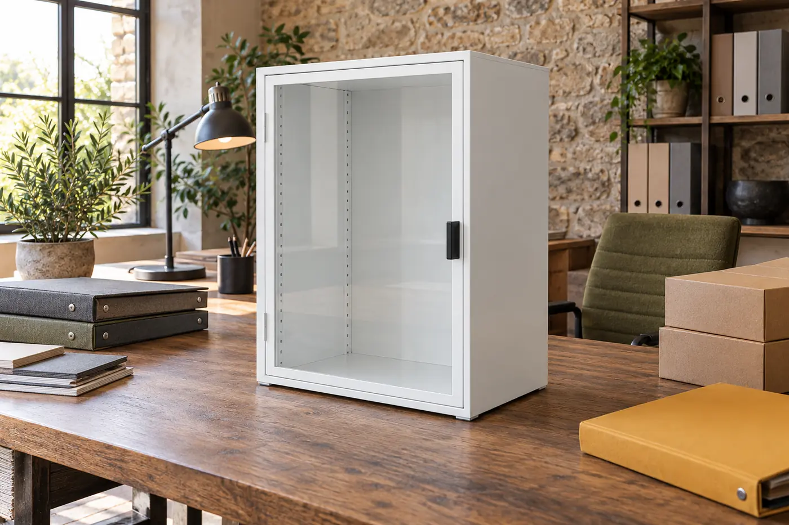
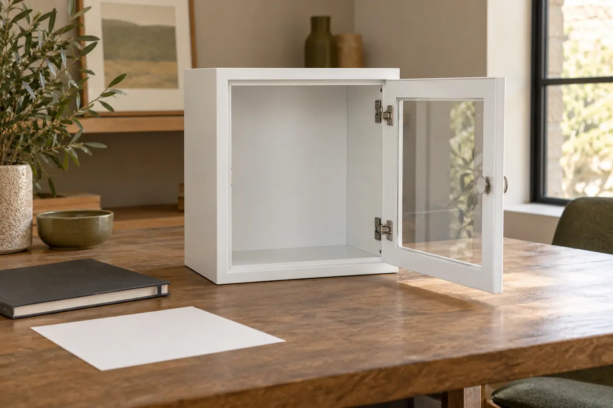

I begin an AED cabinet purchase with a relationship, not a favourite photograph. The proposed cabinet has to be connected, on paper, to the exact device and the actual workplace decision. A listing that looks convincing can still describe a different door option, an earlier cabinet variant or a package that does not include the device shown beside it. My job in these notes is to make those documentary gaps visible before a purchasing decision travels further than its evidence.
I write as Nolan Vale, Cabinet Atlas’s fictional facilities-purchasing editor. I am not a clinician, trained responder, installer, inspector or product tester. These pages are not an emergency resource or a judgement that equipment is ready. Actual workplace and AED-program responsibilities, exact manufacturer instructions and qualified installation decisions govern suitability and arrangements. For urgent help, follow the actual emergency arrangements and contact local emergency services. Do not use a buying article to decide how to operate emergency equipment.
Begin with the record, then compare the market
A market overview can help me recognise the kinds of cabinet descriptions a buyer may encounter. I use this overview of AED wall-cabinet purchasing options as a starting point for questions, not as proof of compatibility, installation approval or emergency availability. The commercial description and the manufacturer’s exact documentation have different jobs. I want the purchasing record to show which source supports each claim, rather than allowing a general comparison to become the final authority.
My first working note names the device model as recorded by the responsible workplace programme, the proposed cabinet identifier and any option suffix. Beside those I put the document title, revision and source that the decision maker will actually rely on. If the quote simply says “standard cabinet”, I leave the proposed identity unresolved. A confident shorthand is still shorthand. I would rather bring a small naming problem back to the supplier than allow it to harden into a receiving dispute.
Consider a hypothetical quote with a cabinet photograph showing a clear front. The attached specification describes both clear-front and solid-front variants, while the order line has no variant code. Nothing here proves that the photograph is wrong. It proves that the order is ambiguous. The useful next question is which precise variant the supplier is offering and which document applies to it. That question belongs in the commercial conversation, not in an experiment with actual emergency equipment.

Give each source a separate job
I divide the file into identity, specification, site decision and commercial scope. Identity tells me what the records refer to. Specification tells me what the manufacturer states about that exact item. The site decision records who has authority to judge suitability for the actual circumstances. Commercial scope tells me what the supplier has offered to supply. A delivery record later describes what was received. None of these sources can silently stand in for all the others.
This distinction matters when records disagree. A supplier email might explain a quote omission but cannot, on its own, rewrite a manufacturer’s environmental statement. A manufacturer drawing might identify external size without answering whether the proposed location has the required documented access arrangements. A purchase order might match the accepted quote perfectly yet still refer to an option that the responsible site decision has not approved. Matching two documents is useful, but the match has a defined scope.
I keep the original wording alongside a plain-language interpretation. “Dimensions shown on overview sheet; interior dimension basis not identified” is more useful than “size okay”. It names the missing evidence without inventing a tolerance or implying a physical trial. Where a responsible person resolves the issue, I record the reference to their decision and any limits. I do not turn their conditional answer into an unconditional endorsement by removing the condition from my summary.
Compare evidence rather than appearances
The following table is a documentary comparison aid. Its examples are hypothetical record problems, not cabinet performance categories. On a narrow screen the table scrolls within its own border; its focused scroll area also accepts horizontal arrow keys.
| Record | Useful evidence | A discrepancy worth holding | Responsible resolution |
|---|---|---|---|
| Device identity | Exact model and documented configuration reference | A family name replaces the actual model | Workplace programme confirms the intended record |
| Cabinet specification | Exact variant and applicable manufacturer document | Outer size is described as usable interior space | Authoritative clarification tied to the offered variant |
| Access arrangement | Documented feature set and approved site plan reference | A lock option appears in the quote but not the approved decision | Responsible site authority reconciles the proposal |
| Supply scope | Explicit line items, options, units and exclusions | Illustrated equipment is assumed to be included | Supplier provides an exact revised offer |
I resist adding a score to this table. Four complete-looking cells do not cancel an unanswered access question. Nor does a low price compensate for uncertainty about the ordered variant. The point is to show a decision maker the status of each relationship, including a genuine “not established”. A blank field should not acquire a favourable meaning merely because the purchasing deadline is close.
Read space claims without staging a fit trial
A cabinet’s outside dimensions describe its outside. That sounds obvious until a listing puts a single size beside a large photograph and a buyer treats it as usable interior space. I ask what the manufacturer calls each dimension, where the statement belongs in the exact document and whether the relevant option changes that statement. A drawing labelled for another variant is not quietly promoted to evidence for the proposed one.
Documented access and clearance questions may remain even when internal dimensions are available. The responsible programme and qualified people must determine the relevant requirements from applicable instructions and actual circumstances. I do not give a universal allowance or suggest trying a device in a cabinet to settle the matter. The purchasing file should capture the question, the authoritative answer and the decision reference. It should not become an improvised test protocol.
An instructive discrepancy is a supplier worksheet that copies a dimension correctly but drops the heading “external”. The number itself has not changed; its meaning has. I would preserve both source and worksheet and request correction of the interpretation. This approach is less dramatic than claiming that a cabinet definitely fits or definitely fails. It is also more honest about what documentary work can establish without a responsible suitability assessment.

Keep the feature list apart from the access plan
Words such as visible, alarmed or lockable describe proposed features only when tied to the exact variant. They do not explain the workplace’s actual authorised access arrangements. I want the responsible site authority’s decision reference to be visible beside the offered feature set. If the quotation changes a door option, that change should not disappear inside a generic product name while the earlier approval remains attached.
I will not offer steps for opening a cabinet, bypassing a lock, disabling an alarm or testing emergency equipment. A purchasing discrepancy is a reason to use the workplace’s authorised communication route, not a reason to alter a real station. Even a well-meant attempt to settle a question physically can cross into responsibilities this publication does not hold. My file describes the unresolved issue and who owns it; it does not instruct readers to intervene.
For example, a supplier may use “alarm included” in a general paragraph while the quoted option omits the alarm designation. That is a scope question. Separately, the approved site plan may require a particular documented arrangement. That is a site decision question. They can be related without being the same question. I keep both open until the respective authoritative records are reconciled, rather than letting one reassuring phrase close the entire discussion.
Connect location and conditions to accountable decisions
An attractive wall in a photograph is not an approved location. The actual site decision may depend on the workplace’s assessed arrangements, the exact equipment documents, building responsibilities and qualified installation input. These pages contain no mounting, drilling, electrical or support recipes. I ask for the approved location reference and the scope of the responsible decision, including whether the proposal changed after that decision was made.
Environmental descriptions need the same restraint. I do not infer a storage range, rating or service interval from a cabinet category or a photograph. The exact applicable manufacturer documentation and the responsible programme determine what must be addressed. A cabinet statement and a device statement may concern different things. A purchasing note should not merge them into a single claim that the entire arrangement is suitable for every condition at a proposed site.
I also ask where authorised condition records will live after handover. An order may be commercially complete while nobody has accepted the record-keeping responsibility. Naming that gap does not require me to prescribe inspections, testing or maintenance. It requires a responsible programme reference and a handover owner. A supplier’s delivery acknowledgement should never be mistaken for acceptance of those ongoing workplace duties.
Make the order legible to the next person
Before the file changes hands, I want the offer to state the exact cabinet, variant, options, quantity units and exclusions. A photograph can show more than the sale includes. A carton can arrive under a short warehouse description that differs from the accepted quote. These facts call for careful documentary reconciliation, not assumptions about contents or a universal package list. I record what the supplier actually offered and leave unsupported inclusions out.
My receiving note separates arrival from suitability. A delivery reference may confirm that a shipment reached the authorised receiving process. It does not prove physical compatibility, certified installation or medical readiness. If a label and the order line disagree, the receiving record should preserve that discrepancy and route it to the responsible owner. I do not advise opening, moving or modifying actual emergency equipment to resolve an administrative mismatch.
- Keep exact identifiers next to the source that supports them.
- Distinguish manufacturer statements from supplier descriptions.
- Record conditional approvals with their conditions intact.
- Give every unresolved question an accountable owner and a decision reference when resolved.
- Preserve superseded offers so later readers can understand what changed.
A decision checklist that can say “not yet”
I treat this checklist as a purchasing conversation, not a certification. Each question has its own documentary basis and responsible owner; an answer about one relationship should not silently close another. A useful result can be a precise pending decision rather than a general approval.
- Is the intended device identity supported by the actual programme record, rather than a familiar family name?
- Is the offered cabinet variant explicit in the current quote and applicable documentation?
- Are internal-space statements distinguished from external and packaged dimensions?
- Does the current feature set match the responsible access decision reference?
- Is the actual location proposal tied to the appropriate responsible approval?
- Are environmental claims attributed to their exact subject and source?
- Are units, options and exclusions explicit in the accepted commercial scope?
- Has the authorised handover route accepted the records and any unresolved questions?
If an answer is missing, I write a hold in ordinary language. “Awaiting variant-specific manufacturer clarification through supplier” is better than “pending check”. The first note tells the next reader what evidence is absent. It also prevents an unanswered question from becoming a presumed pass when a colleague inherits the file. The hold is about the purchasing decision; it does not direct anyone to interrupt or change existing emergency arrangements.
For a focused next step, use the identity guide, space and document guide, door and access guide, location record guide, conditions guide or supplier and handover guide. Each follows a different record problem. Together they support a clearer file, not a substitute for the qualified decisions, manufacturer instructions and real workplace responsibilities that determine an actual arrangement.